Pedoman Visual
Design System
Cak Ali
Pedoman tampilan dan komponen untuk cakali.id. Gaya: minimalis, bersih, modern, dengan sentuhan editorial yang personal. Struktur informasi mengikuti Portal Jabar: mega menu, kartu kabar, kolom layanan, tombol samping, footer berwarna brand.
Dekat & personal
Bahasa santai, foto asli, sapaan "Cak", tanda tangan tulisan tangan. Hindari kesan kaku dan birokratis.
Editorial & berani
Tipografi besar, kontras tipis-tebal, penomoran 01–06, tata letak asimetris. Merah tetap dipakai hemat.
Jelas seperti portal
Navigasi maksimal 5 menu, isi dikelompokkan di mega menu. Pengunjung cepat tahu harus ke mana.
Ringan di HP
Mobile-first, gambar WebP/Unsplash berukuran pas, animasi berhenti bila pengguna memilih kurangi gerakan.
Warna
Palet mengacu pada warna Gerindra. Komposisi ideal: ~80% putih/netral/cream, ~15% merah untuk aksi, penekanan, mega menu, pita, dan footer, ~5% emas sebagai aksen. Klik kotak warna untuk menyalin kode hex.
Brand · Merah (primer)
Gold · Emas (aksen)
Netral · Stone (teks, latar, garis)
Latar & semantik
Pemakaian & kontras
Aa Putih di brand-600
Tombol, mega menu, pita · AA ✓
Aa Putih di brand-700
Footer · AA ✓
Aa Putih di stone-900
Kartu gelap · AAA ✓
Aa Emas di putih
✗ Jangan untuk teks
Tipografi
Plus Jakarta Sans (font buatan Indonesia), bobot 300–800, untuk semua teks. Tanda tangan "Cak Ali" memakai gambar logo, bukan font. Semua judul (H1–H6) memakai bobot bold (700). Ciri khas editorial: judul seksi huruf kapital, baris kedua berwarna merah.
Judul editorial (pola utama judul seksi)
Program
Prioritas
<h2 class="text-4xl font-bold uppercase leading-[1.05] tracking-tight text-stone-900 md:text-5xl">
Program<br>
<span class="text-brand-600">Prioritas</span>
</h2>Skala
Nama hero · 22vw→13.5rem / 800Cak Ali
Nama tipis · 36→48px / 300Ali Hasan Mun'im
.h1 · 36→48px / 700Membangun dari desa
.h2 · 30→36px / 700Kabar terkini
.h3 · 24px / 700Penguatan UMKM lokal
.h4 · 20px / 700Pelatihan digital untuk pemuda
Angka urut · 36px / 30001 02 03
.lead · 18→20px / 400Cak Ali percaya perubahan dimulai dari mendengar langsung suara warga.
.body · 16px / 400Selama bertahun-tahun, Cak Ali aktif mendampingi pelaku usaha kecil di Bondowoso, Situbondo, dan Banyuwangi.
Label kapital · 12px / 700Wilayah perjuangan
.eyebrow · 12px / 700Program Unggulan
Logo sebagai tanda tangan.caption · 12px / 400Diperbarui 12 Oktober 2026 · Banyuwangi
.linkBaca profil lengkap Cak Ali untuk mengenal lebih dekat.
Tanda tangan
Pakai logo-cak-ali.png, maks. sekali per seksi, miring 2–3°.
Warna teks
Judul stone-900, isi stone-700/600, sekunder stone-500.
Panjang baris
Paragraf maks. ±70 karakter (max-w-2xl).
Spasi, Radius, Bayangan
Gunakan skala spasi Tailwind (kelipatan 4px). Pemisah lebih banyak memakai garis tipis (border-stone-200) dan ruang kosong daripada bayangan.
Skala spasi yang dipakai
Antar seksi
.section → 64px mobile, 96px desktop
Isi kartu
p-5–p-8; jarak antarkartu gap-4–gap-6
Gutter halaman
.container-site → 16 / 24 / 32px, lebar maks 1152px
Radius
rounded-lg
8px · thumbnail
rounded-xl
12px · input, ikon
rounded-2xl
16px · kartu
rounded-3xl
24px · bento, banner
rounded-full
tombol, badge
rounded-t-full
bingkai foto hero
Bayangan
Tanpa bayangan
border stone-200 · default kartu
shadow-soft
header saat scroll
shadow-soft-lg
hover kartu, kartu Kabar, tombol samping
Ikon
Gaya garis ala Lucide, stroke-width 1.75, warna mengikuti teks (currentColor). Ukuran: 16px (inline), 20px (tombol, daftar), 24px (kotak ikon). Disimpan di js/icons.js, dirender lewat atribut data-icon. Klik ikon untuk menyalin namanya.
<svg data-icon="map-pin" class="h-5 w-5"></svg>Wadah ikon
.icon-tile
di mega menu
bulat (nilai)
ilustrasi (kolom "Untuk")
di atas foto
Grid & Breakpoint
Mobile-first: tulis gaya untuk HP dulu, lalu tambahkan sm:, md:, lg:. Tata letak editorial memakai 12 kolom di lg: (mis. 4-5-3 di hero, 4-4-4 di Kenalan). Uji di 360, 390, 768, 1024, 1440px tanpa scroll horizontal.
| Prefix | Min. lebar | Perangkat | Catatan |
|---|---|---|---|
| (dasar) | 0 | HP | 1 kolom, menu hamburger, tombol WA bulat |
| sm: | 640px | HP besar | 2 kolom kartu, CTA header muncul |
| md: | 768px | Tablet | Galeri 5 kolom bertingkat |
| lg: | 1024px | Laptop | Menu 5 + mega menu, tombol samping, 12 kolom |
| 2xl: | 1536px | Layar lebar | Label vertikal di tepi hero |
Grid 12 kolom (lg)
Tombol
Bentuk pil (rounded-full). Maksimal satu tombol primer per area. Tinggi minimal 44px pada HP untuk target sentuh.
Varian
.btn-primary
Aksi utama: Relawan, Kirim
.btn-secondary
Aksi kedua yang tetap penting
.btn-outline
Navigasi, "selengkapnya"
.btn-ghost
Aksi ringan, batal, tutup
.btn-wa
Semua aksi ke WhatsApp
Di atas latar gelap/merah/cream
Tautan aksi editorial
Dipakai di samping judul seksi editorial, pengganti tombol outline.
Ukuran & status
Badge, Chip & Tab
Badge untuk label kategori/status. Chip untuk filter (aria-pressed). Tab bergaris bawah untuk mengganti daftar di tempat yang sama (role="tab" + aria-selected), seperti Terbaru/Terpopuler di Kabar Terkini.
Badge
Chip filter (klik untuk mencoba)
Tab (klik untuk mencoba)
Form
Label selalu terlihat di atas field (jangan hanya placeholder). Pesan galat muncul di bawah field dengan ikon dan teks. Tanda * untuk wajib diisi.
Status field
Teks bantuan singkat di bawah field.
Nomor WhatsApp minimal 10 digit.
Minimal 20 karakter.0 / 1000
Checkbox & radio
Contoh form utuh (coba kirim kosong)
Validasi
Saat submit (semua galat tampil sekaligus) dan saat field ditinggalkan. Fokus ke field galat pertama.
Lebar field
Satu kolom di HP; dua kolom mulai sm: untuk field pendek.
Keyboard HP
Pakai inputmode="tel" untuk nomor dan autocomplete yang sesuai.
Kartu
Dasar kartu: latar putih, garis stone-200, rounded-2xl. Kartu yang bisa diklik memakai .card-hover. Kartu foto memakai gradasi gelap dari bawah agar teks putih terbaca, dan foto sedikit membesar saat hover.
Kartu bernomor (program)
 01
Ekonomi & UMKM
Kartu foto: dipakai untuk item unggulan.
01
Ekonomi & UMKM
Kartu foto: dipakai untuk item unggulan.

Menyapa nelayan di pesisir Banyuwangi
Kartu kegiatan untuk halaman daftar Kegiatan.
Baris fakta & nilai
- Turun langsungDatang ke desa, duduk bareng warga, mencatat sendiri.
- Terbuka & amanahAspirasi dicatat, ditindaklanjuti, dan dikabarkan kembali.
Header & Mega Menu
Logo tulisan tangan Cak Ali (merah; versi putih otomatis saat header merah). Maksimal 5 menu; menu yang punya banyak isi dibuka sebagai mega menu penuh lebar berwarna merah (ala Portal Jabar). Satu CTA saja: Jadi Relawan. Header dibuat otomatis oleh js/main.js dari config.nav.
Tiga status header

Transparan · di atas hero (<body data-header="overlay">). Titik merah = halaman aktif.
.is-scrolled · putih semi-transparan + blur setelah halaman digulir 8px. Halaman tanpa hero otomatis diberi spacer setinggi header.
Mega menu (klik menu untuk mencoba)
Kenal Cak Ali
Siapa Cak Ali, dari mana ia berangkat, dan apa yang ia perjuangkan.
- Profil Cak AliLatar belakang keluarga, pendidikan, dan dunia usaha.
- PerjalananJejak langkah dari kampung hingga Pemilu 2019.
- Visi & MisiArah perjuangan untuk Dapil Jawa Timur IV.
- Nilai yang DipegangTurun langsung, terbuka, dan amanah.

Program Prioritas
Tanpa kartu foto: item tampil 3 kolom penuh.
- Ekonomi & UMKMAkses modal dan pasar untuk usaha kecil.
- Pemuda & PendidikanBeasiswa dan pelatihan kerja.
- Petani & NelayanPupuk tepat waktu, harga panen adil.
- Infrastruktur DesaJalan, irigasi, dan air bersih.
- Layanan KesehatanPuskesmas mudah dijangkau.
- Untuk PengusahaGagasan ekonomi dan kolaborasi.
Struktur menu
Tentang · Program · Kabar · Terlibat (mega menu) · Kontak (tautan biasa).
Isi panel
Judul, intro 1 kalimat, item (ikon + judul + deskripsi), opsional kartu foto di kanan.
Perilaku
Buka dengan klik, tutup dengan X, Esc, atau klik di luar. Header ikut merah (.is-mega).
Menu mobile (klik ikon menu)
Cak Ali
Tombol Samping & Footer
Ala Portal Jabar: deretan tombol aksi cepat menempel di kanan tengah layar (desktop), footer berwarna brand dengan info kontak dan peta situs. Keduanya dibuat oleh js/main.js.
Tombol samping (arahkan kursor untuk label)
Di bawah lg hanya tombol WhatsApp bulat di kanan bawah.
- •
fixed right-4 top-1/2, mulailg: - • Bingkai putih agar tetap terlihat di atas footer merah
- • Disembunyikan saat mega menu / menu mobile terbuka
Footer
Feedback
Alert untuk pesan di dalam halaman, toast untuk konfirmasi singkat yang hilang sendiri, modal untuk konfirmasi, empty state saat belum ada data.
Alert
Data tersimpan di perangkat ini. Tekan "Kirim via WhatsApp" agar aspirasi sampai ke tim Cak Ali.
Terima kasih, pendaftaran berhasil! Nomor tiket Anda: ASP-20261022-001.
Browser Anda sedang dalam mode privat, draf tidak bisa disimpan otomatis.
Ada 2 isian yang perlu diperbaiki sebelum dikirim.
Toast & modal
Empty state & skeleton
Hero
Label dapil dengan titik berdenyut dan judul besar di tengah, lalu tiga kolom 4 · 5 · 3: perkenalan editorial (nama tipis kapital + logo sebagai tanda tangan), foto potong di atas lingkaran merah yang menempel ke pita berjalan, dan daftar wilayah + kartu video. Tanpa angka statistik dan tanpa lencana/penghargaan.
Dapil Jawa Timur IV
Bersama Cak Ali, membangun Jawa Timur dari desa
Halo, saya
Ali Hasan
Mun'im, S.E
Pengusaha · Putra Tapal Kuda
Wilayah perjuangan
- 01Bondowoso
- 02Situbondo
- 03Banyuwangi
Foto potong
PNG latar transparan (cak-ali-cutout.png) dari foto studio berlatar putih, dibuat dengan tools/cutout.ps1. Menempel ke tepi bawah hero; di desktop 130% lebar kolom + margin atas negatif, jadi kepala menjorok ke atas dan sedikit menimpa judul (±25px). Tanpa lencana berputar.
Kartu video
Tombol [data-video] membuka <dialog> berisi YouTube (youtubeId) atau MP4 dari config.heroVideo. Tanpa sumber: pesan "Video segera hadir".
Jangan
Angka statistik, lencana daun, atau apa pun yang terlihat seperti penghargaan.
Urutan di HP
Judul → foto → perkenalan & CTA → wilayah & video, agar wajah langsung terlihat di layar pertama.
Pola Seksi
Susunan seksi yang dipakai ulang. Selang-seling latar putih dan stone-50 antar seksi.
Kepala seksi editorial (12 kolom: 5 · 4 · 3)
Program
Prioritas
Disusun dari obrolan langsung dengan warga, petani, nelayan, dan pelaku usaha.
Semua programBento program (1 besar · 4 bernomor · 1 lebar)
01
Ekonomi & UMKM
Pemuda & Pendidikan
Petani & Nelayan
Infrastruktur Desa
Layanan Kesehatan
Wakil yang Mendengar
Sampaikan aspirasi
Kabar Terkini (ala Portal Jabar)
Kabar Terkini
Lihat semua PertanianPanen bersama petani padi di SitubondoBaca selengkapnya
PertanianPanen bersama petani padi di SitubondoBaca selengkapnya
SosialSilaturahmi dengan warga desa di Situbondo5 Okt 2026 · Situbondo
NelayanMenyapa nelayan di pesisir Banyuwangi20 Sep 2026 · Banyuwangi
Kolom "Untuk …" (ala Layanan Terpopuler Portal Jabar)
- Sampaikan aspirasiJalan rusak, air bersih, ceritakan saja.
- Agenda kunjunganCek kapan Cak Ali mampir ke desamu.
- Gagasan ekonomiAkses modal, pasar, dan perizinan.
- Diskusi kolaborasiNgobrol langsung soal kerja sama.
Kenalan (3 kolom bergaris: fakta · kutipan · nilai)
Kenalan dengan
Cak Ali
Saya mau jadi teman ngobrol warga, kapan pun.
Galeri bertingkat


Ajakan akhir (3 kolom, garis atas hitam)
Mari bergerak
bersama
Ada yang perlu dibenahi di desamu?
Sampaikan aspirasi- Chat tim Cak Ali
- @alihasanmunim
Timeline (halaman Tentang)
2019
Caleg DPRD Provinsi Jawa Timur
Dapil Jatim IV, Partai Gerindra.
20xx
Aktif di KADIN Indonesia
Contoh isi, menunggu data dari klien.
Accordion (FAQ / detail program)
Bagaimana aspirasi saya diproses?
Setelah dikirim via WhatsApp, tim Cak Ali akan mencatat dan menghubungi Anda bila perlu informasi tambahan.
Siapa yang bisa jadi relawan?
Siapa saja warga dapil berusia 17 tahun ke atas yang ingin ikut bergerak.
Suara & Nada
Bicara seperti tetangga yang bisa dipercaya: santai, hangat, sopan, dan to the point. Sapaan "Cak Ali" untuk beliau, "kamu/Anda" atau "sampeyan" secukupnya untuk pengunjung.
Lakukan
- "Ada jalan rusak di desamu? Kabari Cak Ali."
- "Halo, saya Ali Hasan Mun'im." (orang pertama di hero)
- Kalimat pendek, kata kerja aktif, angka nyata.
- Foto asli kegiatan; Unsplash hanya pengganti sementara.
Hindari
- "Silakan menyampaikan aspirasi melalui formulir berikut ini."
- "Coblos nomor 4!" (sebelum masa kampanye resmi)
- Lebih dari 5 menu utama atau lebih dari 1 CTA di header.
- Teks kapital panjang untuk paragraf, terlalu banyak merah.
Token & Kode
Token di bawah sama dengan tailwind.config.js (theme.extend). Kelas komponen ada di blok <style type="text/tailwindcss"> pertama pada file ini dan di src/input.css.
Aturan singkat
- Pakai kelas komponen yang ada sebelum membuat gaya baru.
- Jangan tulis warna hex langsung di HTML, pakai token (
brand-600, bukan#C8102E). - Menu, kontak, dan teks identitas diubah di
js/config.js, bukan di HTML. - Halaman dengan hero di bawah header:
<body data-header="overlay">. - Komponen baru: tambahkan dulu ke dokumen ini dan
src/input.css. - Setiap elemen interaktif wajib punya status fokus yang terlihat.
Design System Cak Ali · v1.3 · Oktober 2026